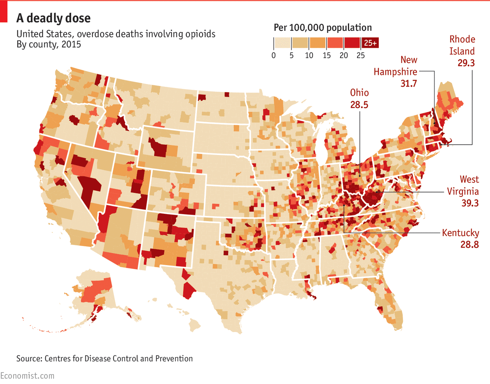

I am very interested in the data collected by federal agencies, such as the NIH, the USDHHS, the HRSA, and many other institutions, on not only opioid abuse and overdoses, but also on opioid prescription, particularly with respect to geographical distribution of the data. I would like to do my project on this dataset because the opioid epidemic, which has taken multiple friends of mine, is one of America's most pressing health issues today, so I would like to learn more about it as well as teach others. Additionally, I imagine that there is abundant data from plenty of sources, such as The Economist article linked in the infographic below.
